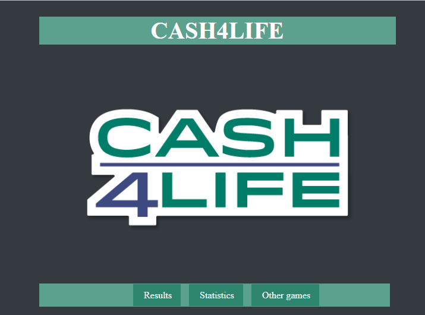
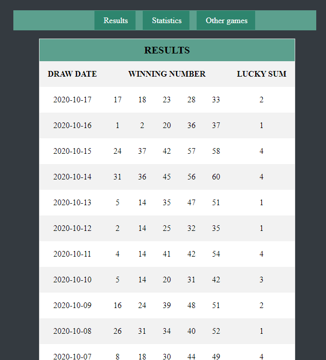
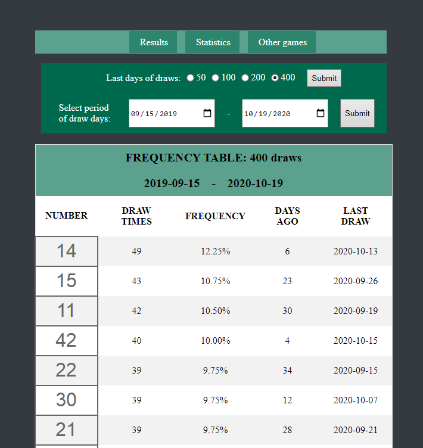
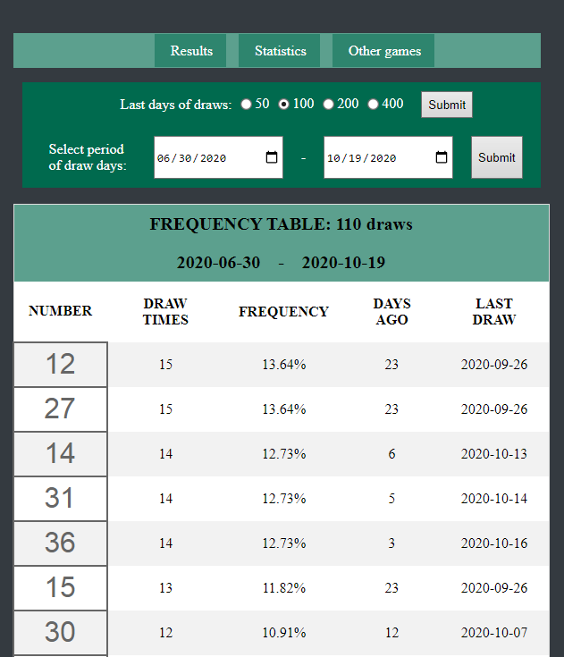

This site was made by searching some freelance projects. I made it as a challenge to get into php and to manipulate data from xml to database.
The site is consisted of frontend development as HTML with CSS and backend development by using php and mysql with phpmyadmin.
The website has a main menu with two pages, one for the numbers extracted since November 2018 and one page for the statistics of how often a number was extracted in some defind period.
The statistics can be viewed for the last 50, 100, 200 and 400 days, or they can be viewed on specific period by choosing two calendaristic days.
The frequency table will show how many days of the game was played in the given period.
The link of the site: Click here